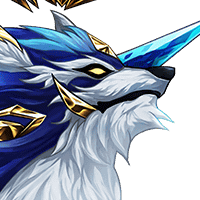

神々しい狼
…………。
レダ
弱っていたとはいえ、 封神儀を一撃で倒すなんて……。
ルチアナ
クッ……神狼…… 民を守るため……私はお前を……！！
レダ
どうあがいても あなたが戦える相手じゃないわ！
神狼
召喚ノチからヲ……使ウモのドもヨ…… 貴サまラは……なニヲ……望ム……？
神狼
こノ……封シん儀ヲ…… モとニ……もどス……つモりカ……？
レダ
どうやら、この世界の封神儀は、 さっきのではなく、
神狼
……カん全ニ……ハ…… 屈ぷクしテイない……といウコトか。
神狼
……人の……子……よ……。 この地……より……早く……去れ……。
レダ
逃げた…… いえ、見逃してくれたのでしょうね……。
レダ
先ほどの戦いが終わったばかりの私たちに 勝ち目なんてなかったでしょうし。
ティリス
あの封神儀、 なんだか苦しそうに見えたけど……。
ＳＣＯＵＴ－Ｆ０３
アノフウシンギカラハ、 アイハンスルチカラガ、カンチサレタ
レダ
ベクタスの封神儀は、 完全に暴走状態だったけど、
レダ
この世界の封神儀は、 元の意識のようなものが残っていて、
レダ
それがせめぎ合っている…… という感じなのかしらね……？
リアナ
あの神狼様のご様子…… 尋常ではありませんでした……。
リアナ
ティリス様たちは、 何か知っておられるのですか……？
ティリス
うーん…… 全部話しちゃった方がいいのかな、レダ？
レダ
こうなった以上、私たちが この世界にやって来た目的も含めて
レダ
………そういう訳で、私たちは「封神儀」を もとに戻すため、この世界を訪れたの。
ルチアナ
さっきのあなたたちの戦い方、 ちょっと変わっていると思っていたけど、
リアナ
話にあった「封神儀」が、 神狼様のことなら、
リアナ
神狼様とその眷属たちの行動が 変わったのも頷けます……。
リアナ
姉さん、 やっぱり神狼様は悪くなかったのよ！
ティリス
戦って弱らせれば、 自然と元の状態に回復するみたい。
ルチアナ
戦って弱らせればって、そんな単純な……。
レダ
言葉にすれば簡単だけど、 相手は、神に近い力を持つ封神儀。
レダ
その“弱らせれば”ってのが 一番難しいのだけれどね……。
レダ
封神儀を元に戻せば、 おそらくこの世界も平和になる。
レダ
つまり、ルチアナとリアナの目的は 私たちと同じってわけね。
レダ
だからあとは、私たちに 全部任せてくれてもかまわないわ。
レダ
もちろん、この先も道案内を 続けてくれるのなら助かるけど……。
ルチアナ
私はまだあなたたちを 完全に信用したわけじゃない。
ルチアナ
私は妹と一緒にあなたたちに協力し、 神狼……封神儀を元に戻すのを確認するわ。
ルチアナ
この世界のことは、 この世界の人間が決める……。
ルチアナ
けど、外の世界から来たあなた方に 全部丸投げにするような真似もできない。
ルチアナ
道案内なんか要らないって言われても、 付いて行かせてもらうわよ！
レダ
じゃあ、リアナも この先の道案内、引き続きお願いしていい？
リアナ
この零壁の密道を抜けても、 神狼様がおられる極域までまだありますから
ティリス
２人に断られたら、 どうしょうかと思ったよ。
リアナ
フフ……ティリス様、 これからもよろしくお願いします。